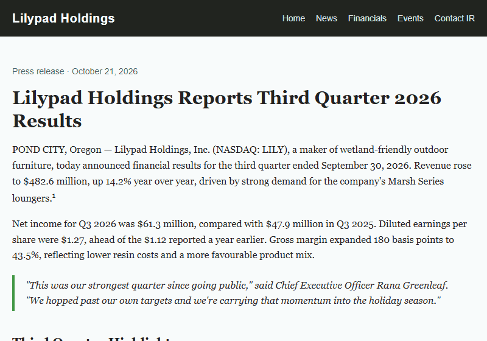

Hello!
Frogbot is a little frog that hops down finance articles, highlights the numbers that matter and hands you a card with every figure, ready to copy or download.

1 Pin the frog
Click the Extensions button (the puzzle piece) in your browser's toolbar, then the pin next to Frogbot (in Edge, the eye: "Show in toolbar"). The frog then sits in your toolbar, one click away.
2 Try it now
See the frog at work on a made-up earnings release, built into Frogbot.
3 Use it on real pages
Open any finance article or earnings release, then click the frog in your toolbar and Release the frog, or press Alt+Shift+F.
Works on almost any article or earnings page. It can't run on browser settings pages or the extension store.
Privacy
Frogbot only runs on a page when you click it or press its shortcut.
Nothing leaves your browser: no accounts, no tracking, and no data sent anywhere.